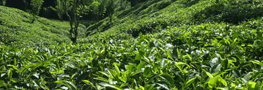
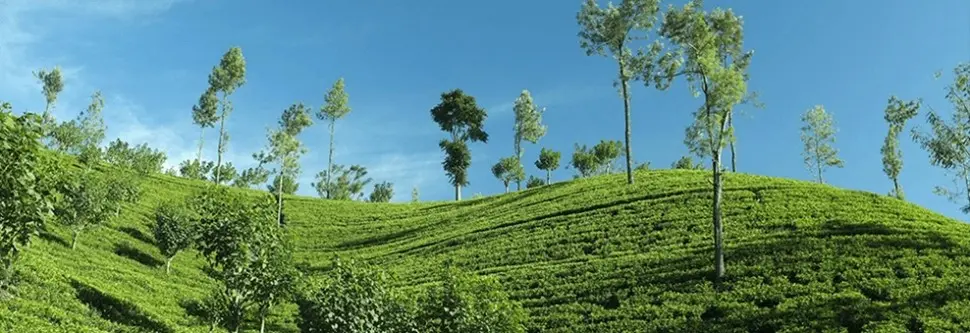
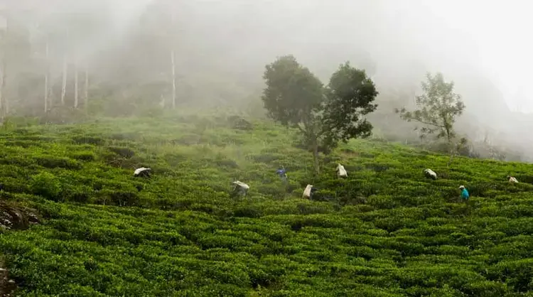
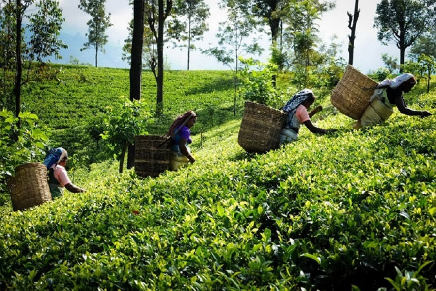
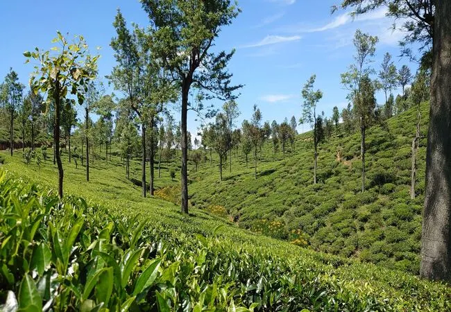
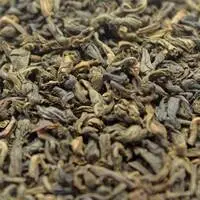
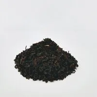
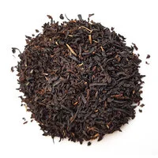
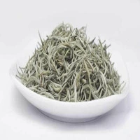

The changes in climatic and geographical factors affect the chemical composition of the tea leaves. As the agro-climatic conditions vary, the texture, aroma, and taste of the tea change in addition. In fact, high-grown tea has paler tones and mellow flavors whereas low-grown tea has darker tones and astringent flavors. Moreover, Sri Lanka has seven main tea districts that come under the above three major tea-growing regions. They are as follows.
 Out of these, Sabaragamuwa and Ruhuna produce low-grown tea, Kandy produces mid-grown tea while Uva, Nuwara Eliya, Dimbula, and Uda Pussellewa produce high-grown tea. The seven tea districts produce tea with taste, texture, and aroma endemic to the region. Besides, the use of the name of the region on the tea brands follows a tight set of guidelines. Therefore, tea that is grown, plucked, processed, manufactured, and packed within the region is only allowed to use the name of the region. The effect of diverse climatic, geographical conditions, and microclimatic conditions inside a region results in a range of characteristics in Ceylon tea. However, the following sections will provide you a brief description of the tea plantations in each of these tea-growing regions.
The hill capital of Sri Lanka where the maiden commercial tea cultivation was embarked upon, belongs to the mid-grown regions where tea is cultivated on slopes ranging from 600m to 1200m. They are simply “intensely full-bodied” tea with the right amounts of aroma and flavor. Further, Kandyan tea has a bright infusion with coppery tones. Tea plantations are visible on the borders of the district, in Nilambe, Hanthana, Gampola, and Hewaheta. Besides, the Kandyan tea district receives its rainfall from southwestern Monsoons. Accordingly, Kandy owns 71,108 Ha of land with lush tea cultivation which is about 32% of the total tea plantations in Sri Lanka.
Hanthana estate which is 4km away from Kandy was one of the first successful estates to grow tea. The Ceylon Tea Board controls the estate and the estate's tea factory has been converted to the Ceylon tea museum. The museum is a showcase of the journey of Ceylon tea with its two floors occupied with ancient machinery used in processing tea. In addition to the Hanthana estate, the Kadugannawa tea estate, located on the way to Kandy from Colombo, Kataboola estate which is one of the most picturesque estates in Sri Lanka, and Imbulpitiya estate are among the noteworthy Kandyan tea estates.
The most popular Ceylon tea among connoisseurs and commoners alike is certainly the tea from Nuwara Eliya. In fact, Nuwara Eliya tea is distinct due to its golden hue and fragrant flavor. Further, the delicately fragrant Nuwara Eliya tea is the palest among Ceylon teas. Moreover, Nuwara Eliya boasts a unique climate with moderate rains, chilly days, and frosty nights. It is more mountainous than any other part of the island and belongs to the highest of high-grown regions.The history of some of the premier tea factories in Nuwara Eliya runs back more than 100 years. However, a visit to Nuwara Eliya won’t be complete without a walk through the tea trails of Sri Lanka.
Anyone has the chance to visit the refreshingly mellow tea sprouts in Dimbula, situated between Nuwara Eliya and Hortain Plains. Owing to the complex topography in the area, a range of microclimates can be experienced in the Dimbula tea district. However, the tea grown here has a golden orange hue, a bit darker than tea grown in its neighbor, Nuwara Eliya, but has a surprisingly mellow flavor. Dimbula was an unspoiled part of the island before the British colonization and was deserted until tea cultivation began here in the 1870s. Wet and misty hills flatter the scenery. However, the Dimbula tea district comprises the following sub-districts.
In addition, Somerset estate, Great western estate, and Queensbury estate are some of Dimbula tea estates with significance.
Uva is the remotest, and the least accessible tea district in Sri Lanka. It has two main parts: Badulla, the hilly area, and Monaragala, the dry part. Yet, tea growing is only visible in Badulla and its subdistricts, including the famous Ella, Haputale, Idalgashinna, and Welimada. Thus, the tea-growing areas in Uva spread in the Southeastern parts of the central hills and receive rains from both Northwest and Southwest monsoons. The British had not considered growing tea in Uva until the construction of a railway line from Colombo to Badulla. However, ‘exquisitely aromatic’ Uva tea is among the most sought-after Ceylon tea at present. Medium-bodied Uva tea is strong and has darker tones with rosy hues. As Uva’s elevation ranges between 1000m to 1500m, it belongs to the high-grown tea region.
With a major tourist attraction, Lipton’s seat, and ever-flourishing tea cultivation stretching up to as far as the eye can capture, the Dambatenne estate in Haputale remains a significant attraction. As per the records, the owner of the tea estate was a Scotsman, Thomas Lipton. He persuaded the coffee-loving American nation to drink tea from his own estate, the finest, no doubt. Thus, at the topmost of the estate is a statue of Thomas Lipton with a teacup in his hands probably admiring the breathtaking panorama view. Besides, Halpewatte tea factory, Madulsima plantations, Caravanella plantations, and Demodara plantations are some tea destinations worth visiting in the Uva tea district.
The least popular of Ceylon tea, but not with the least prize is Uda Pusselewa tea. Due to its proximity to Nuwara Eliya, it is often compared with tea from Nuwara Eliya, but the liquor is darker and strong compared to the latter. “Exquisitely tangy” is the expert’s remark on Uda Pussellwa tea Located between the tea districts of Kandy and Uva, Uda Pussellewa is the smallest tea district of the seven. It is a less densely populated area, and thus, most of the land is covered with tea. Ragala, Maturara, and Halgranoya are the main sub-districts of the region. Uda Pussellwe belongs to the high-grown region with an altitude ranging from 900m to 1600m. Further, the land with no tea belongs to the Hakgala strict forest reserve. Besides, the Uda Pussellewa receives rain from both Southwest monsoons and Northeast Monsoons and therefore enjoys two quality seasons. Uda Pussellwa was also a pristine region before tea plantations and even today rare flora and fauna can be encountered. Leopards frequent the forests and are occasionally visible in tea plantations as well.
Classified as low-grown tea, Ruhuna tea is grown on the southern end of the central massif. Full-flavored black tea produced in Ruhuna is “distinctively unique” as attested by the connoisseurs. In 1900, tea cultivation began in Ruhuna, much later than other tea districts. The British opened the first tea estates on the outskirts of Sinharaja reserve in the vicinity of the Galle and Matara railways. Galle, Matara, and Deniyaya are the main sub-districts of Ruhuna.
While the tea industry was mainly under the control of the British, the Ruhuna tea industry was the first to come under the Ceylonese planting fraternity. Tea bushes grow rapidly in the low elevation estates of Ruhuna producing a long tea leaf. It’s similar to the neighboring Sabaragamuwa tea but Ruhuna tea has a stronger aroma. With an elevation below 600m, Devtura estate, Moragolla estate, and New Deniyaya estate are among the leading tea producers of the region. Along with its nearby resident, Sabaragamuwa, Ruhuna tea has distinct claims to a substantive 60% of Ceylon tea production.
| # | Tea Name | Exports | Image |
|---|---|---|---|
| 1 | Green Tea | Currently, the main export markets for green Ceylon Tea are the Middle East and the countries of the former Soviet Union. Over time, sales are also growing in Europe, North America and East Asia. Within Sri Lanka also, a taste for green tea is rapidly developing. |  |
| 2 | Organic Ceylon Tea | At present over 50% Ceylon Tea exports reach Middle Eastern countries. UAE, Jordan, Saudi Arabia, Iran, Iraq, Syria, Libya, Tunisia and Lebanon are the leading importing countries of Ceylon Tea in the Middle East and Gulf region. Since early 1990s, the Russian Federation and CIS countries emerged as major buyers of Ceylon Tea. |  |
| 3 | Black Tea | Sri Lanka black tea for each kilogram were from exports to Australia, United Kingdom (UK), the Netherlands, Poland and US. |  |
| 4 | White Tea | Sri Lankan white tea mainly exports to Iraq, Turkey, Russia and Iran. |  |